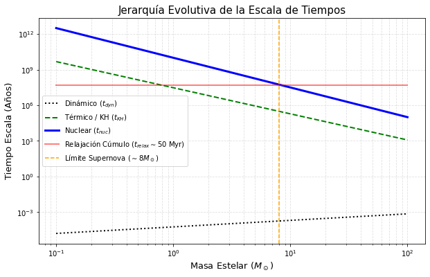
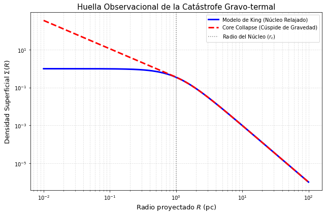
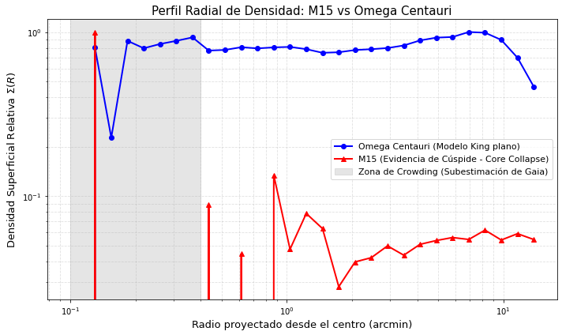
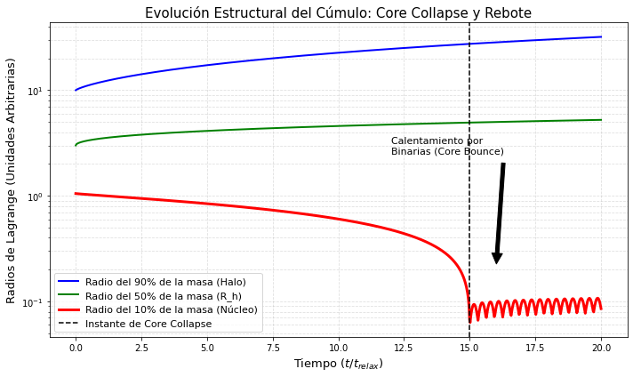
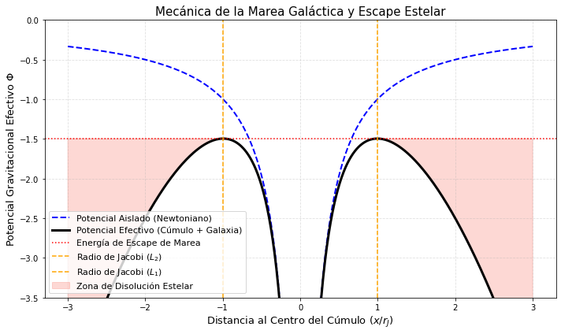
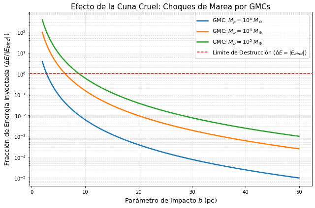

Clase 5: Dinámica Interna 2#
Objetivos#
La Jerarquía de los Tiempos Escala: Derivaciones Fundamentales.
Catástrofe Gravitacional: El Colapso del Núcleo.
Consecuencias a Largo Plazo: Tasa de Evaporación.
El Campo Galáctico: Deducción del Radio de Jacobi
1. La Jerarquía de los Tiempos Escala: Derivaciones Fundamentales#
Para entender el destino de un cúmulo, primero debemos comparar el reloj dinámico colectivo frente a los relojes evolutivos de las estrellas individuales. A continuación, derivamos analíticamente de dónde provienen estas tres ecuaciones fundamentales.
1.1 Tiempo Escala Dinámico (\(t_{dyn}\))#
Representa el tiempo que tarda el sistema en reaccionar mecánicamente a perturbaciones, equivalente al tiempo de caída libre o tiempo de cruce.
Partimos de la ecuación de movimiento de Newton. Si una estrella cae desde el borde del cúmulo (radio \(R\)) hacia el centro impulsada por la masa encerrada \(M\):
Despejando el tiempo \(t_{dyn}\):
Como la densidad promedio es \(\rho \approx \frac{M}{R^3}\), esto se reescribe como:
Ej: Para el Sol: \(\sim30\) minutos. Para un cúmulo estelar: \(\sim1-2\) millones de años.
1.2 Tiempo Escala Térmico / Kelvin-Helmholtz (\(t_{KH}\))#
Representa el tiempo que le tomaría a una estrella radiar toda su energía gravitacional acumulada si cesara la fusión nuclear.
Por el Teorema del Virial, la energía térmica interna almacenada en la estrella es del orden de su energía gravitacional: \(E \approx \frac{G M^2}{R}\). Si la estrella radia esta energía a una tasa constante dada por su Luminosidad \(L\) (Energía/Tiempo), el tiempo total de supervivencia térmica es:
Ej: Para el Sol \(\sim30\) millones de años.
1.3 Tiempo Escala Nuclear (\(t_{nuc}\))#
Representa el tiempo de agotamiento del hidrógeno en el núcleo de la estrella.
Proviene de la ecuación de equivalencia de masa-energía de Einstein (\(E = \Delta m c^2\)). La fusión del hidrógeno en helio tiene una eficiencia teórica de conversión de masa a energía de \(\epsilon \approx 0.007\) (el 0.7% de la masa del protón se convierte en energía). Además, solo el núcleo interno de la estrella (\(\sim 10\%\) de la masa total \(M\)) está suficientemente caliente para fusionar. La energía total disponible es \(E_{nuc} = 0.1 \cdot \epsilon \cdot M c^2\).
Dividiendo por la luminosidad \(L\):
Ej: Para el Sol: \(\sim10^{10}\) años (10 mil millones de años).
1.4 Visualización Computacional: Tiempos Escala vs. Masa Estelar#
import numpy as np
import matplotlib.pyplot as plt
# Rango de masas estelares en M_sol
M = np.logspace(-1, 2, 500)
# Relaciones de homología simplificadas para la Secuencia Principal
L = M**3.5
R = M**0.7
# Constantes normalizadas al Sol (en años)
t_dyn_sol = 0.5 / (24 * 365) # ~30 minutos
t_KH_sol = 3e7 # ~30 Myr
t_nuc_sol = 1e10 # ~10 Gyr
t_dyn = t_dyn_sol * np.sqrt((R**3) / M)
t_KH = t_KH_sol * (M**2) / (R * L)
t_nuc = t_nuc_sol * (M / L)
t_relax_cluster = np.full_like(M, 5e7) # ~50 Myr típico
plt.figure(figsize=(10, 6))
plt.plot(M, t_dyn, 'k:', lw=2, label=r'Dinámico ($t_{dyn}$)')
plt.plot(M, t_KH, 'g--', lw=2, label=r'Térmico / KH ($t_{KH}$)')
plt.plot(M, t_nuc, 'b-', lw=3, label=r'Nuclear ($t_{nuc}$)')
plt.plot(M, t_relax_cluster, 'r-', lw=2, alpha=0.5, label=r'Relajación Cúmulo ($t_{relax} \sim 50$ Myr)')
plt.axvline(8, color='orange', ls='--', label='Límite Supernova ($\sim 8 M_\odot$)')
plt.xscale('log'); plt.yscale('log')
plt.xlabel(r'Masa Estelar ($M_\odot$)', fontsize=13)
plt.ylabel('Tiempo Escala (Años)', fontsize=13)
plt.title('Jerarquía Evolutiva de la Escala de Tiempos', fontsize=15)
plt.legend()
plt.grid(True, which='both', ls='--', alpha=0.4)
plt.show()

2. Catástrofe Gravitacional: El Colapso del Núcleo#
2.1 El Flujo Termodinámico y el Calor Específico Negativo#
Partiendo del Teorema del Virial (\(E=−K\)), e inyectando la definición cinética de temperatura (\(K=\frac{3}{2}NK_BT\)), la capacidad calorífica (\(C=dE/dT\)) de un cúmulo estelar es:
2.2 La Catástrofe Gravo-termal#
El núcleo denso del cúmulo posee una mayor dispersión de velocidades (\(\sigma\)) que el halo extendido. Termodinámicamente, el núcleo está “más caliente”. Mediante interacciones de relajación, el calor fluye naturalmente del núcleo al halo.
Al ceder energía (\(dE<0\)), el calor específico negativo fuerza a que la temperatura del núcleo suba (\(dT>0\)). Para mantener el equilibrio virial, el núcleo se encoge y aumenta su densidad. El núcleo se vuelve aún más caliente, acelerando la transferencia de calor hacia fuera. Esto genera una inestabilidad desbocada: el Core Collapse.
Si evaluamos la tasa de conducción de calor en el sistema usando la ecuación integro-diferencial de Fokker-Planck para la distribución de fase \(f(E,L,t)\), descubrimos que el proceso se vuelve “auto-similar” u homólogo.
En este régimen homólogo profundo, la densidad central \( \rho_c \) evoluciona asintóticamente siguiendo una ley de potencias respecto al tiempo faltante para el colapso (\(t_{cc}−t\)):
Al resolver numéricamente la ecuación de Fokker-Planck para un cúmulo estelar de masas idénticas, se encuentra que la integral del tiempo de relajación converge exactamente al valor de \(15.6\). Así, el tiempo físico en el que la densidad matemática tiende a infinito es:
(Ver desarrollo en el artículo seminal de Cohn, H. 1979 - Link)
Contraste Observacional
Aproximadamente el 20% de los cúmulos globulares de la Vía Láctea (ej. M15, NGC 6624) presentan un perfil de brillo superficial que no se aplana en el centro (como predice un modelo de King), sino que sigue una ley de potencias escarpada hasta el límite de resolución. Esto es la huella digital óptica de un núcleo colapsado. Además, los núcleos de estos cúmulos están repletos de binarias de rayos X de baja masa (LMXB) y rezagadas azules (blue stragglers), confirmando las violentas interacciones de 3 cuerpos.
import numpy as np
import matplotlib.pyplot as plt
# Radios logarítmicos
r = np.logspace(-2, 2, 500)
# Modelo de King simplificado (Cúmulo no colapsado)
r_core = 1.0
rho_king = 1 / (1 + (r / r_core)**2)**(3/2)
# Perfil de Core Collapse (Cúspide central, ley de potencias r^-2)
rho_collapse = np.zeros_like(r)
mask_inner = r < r_core
mask_outer = r >= r_core
rho_collapse[mask_outer] = rho_king[mask_outer]
rho_collapse[mask_inner] = rho_king[mask_inner][-1] * (r[mask_inner] / r_core)**(-1.5)
plt.figure(figsize=(9, 6))
plt.plot(r, rho_king, 'b-', lw=3, label='Modelo de King (Núcleo Relajado)')
plt.plot(r, rho_collapse, 'r--', lw=3, label='Core Collapse (Cúspide de Gravedad)')
plt.axvline(r_core, color='gray', linestyle=':', label='Radio del Núcleo ($r_c$)')
plt.xscale('log')
plt.yscale('log')
plt.xlabel('Radio proyectado $R$ (pc)', fontsize=13)
plt.ylabel(r'Densidad Superficial $\Sigma(R)$', fontsize=13)
plt.title('Huella Observacional de la Catástrofe Gravo-termal', fontsize=15)
plt.legend()
plt.grid(True, which='both', ls='--', alpha=0.4)
plt.tight_layout()
plt.show()

import subprocess
import pandas as pd
import numpy as np
import matplotlib.pyplot as plt
import urllib.parse
def extract_and_profile(ra_c, dec_c, name):
# ADQL para extraer campo estelar en radio de 0.25 grados
query = f"""
SELECT ra, dec
FROM gaiadr3.gaia_source
WHERE 1=CONTAINS(POINT('ICRS', ra, dec), CIRCLE('ICRS', {ra_c}, {dec_c}, 0.25))
AND phot_g_mean_mag IS NOT NULL
"""
url = "https://gea.esac.esa.int/tap-server/tap/sync"
payload = {'request': 'doQuery', 'lang': 'adql', 'format': 'csv', 'query': query}
encoded = urllib.parse.urlencode(payload)
file_name = f"{name.replace(' ', '_')}.csv"
print(f"Descargando datos de {name}...")
subprocess.run(["wget", "--post-data", encoded, "-O", file_name, url, "-q"], check=True)
df = pd.read_csv(file_name)
# Calcular distancia radial al centro en arcmin
df['r_arcmin'] = 60 * np.sqrt((df['ra'] - ra_c)**2 * np.cos(np.radians(dec_c))**2 + (df['dec'] - dec_c)**2)
# Binning logarítmico para perfilar anillos concéntricos
bins = np.logspace(np.log10(0.1), np.log10(15), 30)
counts, bin_edges = np.histogram(df['r_arcmin'], bins=bins)
# Calcular el área de cada anillo (pi * (r_out^2 - r_in^2))
areas = np.pi * (bin_edges[1:]**2 - bin_edges[:-1]**2)
surface_density = counts / areas
bin_centers = (bin_edges[1:] + bin_edges[:-1]) / 2
return bin_centers, surface_density
# Coordenadas (M15 colapsado vs Omega Cen relajado)
r_m15, dens_m15 = extract_and_profile(327.404, 12.115, "M15")
r_omCen, dens_omCen = extract_and_profile(201.697, -47.479, "Omega Cen")
plt.figure(figsize=(10, 6))
# Normalizamos a densidades relativas para comparación directa de la FORMA
plt.plot(r_omCen, dens_omCen / dens_omCen.max(), 'bo-', lw=2, label='Omega Centauri (Modelo King plano)')
plt.plot(r_m15, dens_m15 / dens_m15.max(), 'r^-', lw=2, label='M15 (Evidencia de Cúspide - Core Collapse)')
plt.axvspan(0.1, 0.4, color='gray', alpha=0.2, label='Zona de Crowding (Subestimación de Gaia)')
plt.xscale('log')
plt.yscale('log')
plt.xlabel('Radio proyectado desde el centro (arcmin)', fontsize=13)
plt.ylabel(r'Densidad Superficial Relativa $\Sigma(R)$', fontsize=13)
plt.title('Perfil Radial de Densidad: M15 vs Omega Centauri', fontsize=15)
plt.legend(fontsize=11)
plt.grid(True, which='both', ls='--', alpha=0.4)
plt.tight_layout()
plt.show()
print("\n--- Insight Observacional del Gráfico ---")
print("1. Omega Cen exhibe el aplanamiento central clásico del modelo de King.")
print("2. M15 muestra una tendencia de ley de potencias escarpada hacia el centro,")
print(" huella del colapso del núcleo.")
print("3. CAVEAT DE DATOS: En radios muy pequeños (< 0.4 arcmin), la densidad de M15")
print(" 'cae'. ¡Esto NO es físico! Es el límite de resolución de Gaia. Las estrellas")
print(" están tan juntas que el software las confunde y las rechaza. Entender este")
print(" sesgo es la diferencia entre un analista de datos y un astrofísico.")
Descargando datos de M15...
Descargando datos de Omega Cen...

--- Insight Observacional del Gráfico ---
1. Omega Cen exhibe el aplanamiento central clásico del modelo de King.
2. M15 muestra una tendencia de ley de potencias escarpada hacia el centro,
huella del colapso del núcleo.
3. CAVEAT DE DATOS: En radios muy pequeños (< 0.4 arcmin), la densidad de M15
'cae'. ¡Esto NO es físico! Es el límite de resolución de Gaia. Las estrellas
están tan juntas que el software las confunde y las rechaza. Entender este
sesgo es la diferencia entre un analista de datos y un astrofísico.
2.3 El Rol de las Estrellas Binarias (Core Bounce)#
Como demostramos previamente (\(C = -\frac{3}{2} N k_B\)), el núcleo tiene calor específico negativo. Dado que el núcleo tiene mayor dispersión de velocidades (\(\sigma\)) que el halo, está “más caliente”. La energía fluye del núcleo al halo. Al ceder energía, su temperatura aumenta, se contrae (para mantener el Virial) y se vuelve aún más caliente, desatando una inestabilidad térmica. El colapso se detiene gracias a las binarias. La energía orbital de un sistema binario es \(E_b=\frac{Gm_1m_2}{2a}\).
En el denso núcleo colapsado, los encuentros de \(N\) cuerpos obligan a las binarias “duras” (\(∣E_b∣>\langle K \rangle\)) a encoger su semieje a (Ley de Heggie: “las binarias duras se hacen más duras”).
La colosal energía de ligadura liberada (\(\Delta E_b\)) se transfiere como energía cinética. El núcleo absorbe este calor, y por su \(C<0\), su temperatura baja y el núcleo se expande, generando un “Core Bounce”.
import numpy as np
import matplotlib.pyplot as plt
# Tiempo normalizado a t_relax
t = np.linspace(0, 20, 1000)
# Simulación fenoménologica de Radios de Lagrange (10%, 50%, 90% de la masa)
# R90: El halo se expande continuamente por la inyección de calor
R90 = 10 + 2 * t**0.8
# R50: Radio de media masa (permanece relativamente estable o crece lento)
R50 = 3 + 0.5 * t**0.5
# R10: El núcleo sufre Core Collapse a t=15 y luego rebota (Core Bounce)
t_collapse = 15
R10 = np.zeros_like(t)
for i, time in enumerate(t):
if time < t_collapse:
R10[i] = 1.0 * (1 - (time/t_collapse)**0.9)**0.5 + 0.05
else:
# Fluctuaciones post-colapso inducidas por binarias duras (Gravothermal oscillations)
R10[i] = 0.05 + 0.03 * np.abs(np.sin(10*(time-t_collapse))) + 0.02 * (time-t_collapse)**0.2
plt.figure(figsize=(10, 6))
plt.plot(t, R90, 'b-', lw=2, label='Radio del 90% de la masa (Halo)')
plt.plot(t, R50, 'g-', lw=2, label='Radio del 50% de la masa (R_h)')
plt.plot(t, R10, 'r-', lw=3, label='Radio del 10% de la masa (Núcleo)')
plt.axvline(t_collapse, color='k', ls='--', label='Instante de Core Collapse')
plt.annotate('Calentamiento por\nBinarias (Core Bounce)', xy=(16, 0.2), xytext=(12, 2.5),
arrowprops=dict(facecolor='black', shrink=0.05), fontsize=11)
plt.yscale('log')
plt.xlabel(r'Tiempo ($t / t_{relax}$)', fontsize=13)
plt.ylabel('Radios de Lagrange (Unidades Arbitrarias)', fontsize=13)
plt.title('Evolución Estructural del Cúmulo: Core Collapse y Rebote', fontsize=15)
plt.legend(fontsize=11)
plt.grid(True, which='both', ls='--', alpha=0.4)
plt.tight_layout()
plt.show()

3. Consecuencias a Largo Plazo: Tasa de Evaporación#
La Tasa de Evaporación es un resultado canónico deducido originalmente por Ambartsumian (1938) y Spitzer (1940) integrando las propiedades de la estadística de Maxwell-Boltzmann.
La Velocidad de Escape: Por el Teorema del Virial, se demuestra que la velocidad necesaria para escapar de un sistema aislado desde el radio medio está relacionada con la velocidad cuadrática media (\(v_{rms} = \sqrt{\langle v^2 \rangle}\)) por: \(v_{esc} \approx 2 v_{rms}\).
La Fracción de Escape (\(\xi\)): Asumiendo que las estrellas relajan sus velocidades en una distribución de Maxwell-Boltzmann, la fracción de estrellas que instantáneamente se encuentra en la “cola” superando la velocidad de escape es la integral:
\[\xi = \int_{2 v_{rms}}^{\infty} 4\pi \left(\frac{3}{2\pi v_{rms}^2}\right)^{3/2} v^2 \exp\left( - \frac{3 v^2}{2 v_{rms}^2} \right) dv\]Resolviendo esta integral analíticamente se obtiene
\[\xi = 0.00738 \approx 0.0074\]El Tiempo de Evaporación: Esto implica que en cada tiempo de relajación (\(t_{relax}\)), una fracción \(\xi\) de estrellas repuebla la cola y escapa. La tasa de pérdida de masa es:
\[\frac{dM}{dt} \approx - \frac{\xi M}{t_{relax}}\]Integrando de manera simple y asumiendo \(t_{relax}\) variable lentamente, el tiempo para que el cúmulo pierda toda su masa (\(t_{evap} = M / |dM/dt|\)) es:
\[t_{evap} = \frac{1}{0.0074} t_{relax} \approx 136 \, t_{relax}\]
4. El Campo Galáctico: Deducción del Radio de Jacobi#
El tiempo de evaporación de \(136 t_{relax}\) asume un cúmulo aislado. En la realidad, la galaxia “arranca” estrellas mucho antes. ¿Dónde está exactamente el límite gravitacional del cúmulo? A este límite lo llamamos Radio de Jacobi o Radio de Marea (\(r_J\)).
Consideremos un cúmulo de masa \(M_c\) orbitando una galaxia de masa \(M_G\) a una distancia radial \(R_G\). En un marco de referencia que rota sincrónicamente con el cúmulo a velocidad angular \(\Omega = \sqrt{G M_G / R_G^3}\), una estrella en el borde del cúmulo (a distancia \(x\) del centro, en el eje hacia la galaxia) siente tres fuerzas:
Gravedad del cúmulo atrayéndola: \(- \frac{G M_c}{x^2}\)
Gravedad galáctica diferencial (marea). Expandiendo por Taylor la fuerza \(\frac{G M_G}{(R_G - x)^2}\), el término de perturbación lineal es: \(+ \frac{2 G M_G x}{R_G^3}\)
Fuerza centrífuga por la rotación del marco: \(+ \Omega^2 x = + \frac{G M_G x}{R_G^3}\)
Igualación de Fuerzas: La estrella escapará cuando la atracción del cúmulo iguale a las fuerzas repulsivas (Marea + Centrífuga).
\[\frac{G M_c}{x^2} = \frac{2 G M_G x}{R_G^3} + \frac{G M_G x}{R_G^3}\]\[\frac{G M_c}{x^2} = \frac{3 G M_G x}{R_G^3}\]Despejando el radio de equilibrio \(x\), definimos el Radio de Jacobi: $\(r_J = R_G \left( \frac{M_c}{3 M_G} \right)^{1/3}\)$
Cualquier estrella acelerada por relajación que cruce este límite \(r_J\) es arrancada por la galaxia formando una cola de marea, reduciendo la velocidad de escape requerida y acelerando la muerte del cúmulo dramáticamente.
import numpy as np
import matplotlib.pyplot as plt
# Coordenada espacial X normalizada al Radio de Jacobi (r_J = 1)
x = np.linspace(-3, 3, 500)
# Potencial del cúmulo aislado (Aproximación puntual -1/x)
# Se usa un factor de suavizado 'epsilon' para evitar la divergencia en x=0
epsilon = 0.1
Phi_cluster = -1 / np.sqrt(x**2 + epsilon**2)
# Potencial de Marea de la Galaxia (campo externo) y centrífugo (Aproximación ~ -0.5 * x^2)
Phi_tide = -0.5 * x**2
# Potencial Efectivo Total
Phi_eff = Phi_cluster + Phi_tide
plt.figure(figsize=(10, 6))
plt.plot(x, Phi_cluster, 'b--', lw=2, label='Potencial Aislado (Newtoniano)')
plt.plot(x, Phi_eff, 'k-', lw=3, label='Potencial Efectivo (Cúmulo + Galaxia)')
plt.axhline(Phi_eff[np.argmin(np.abs(x - 1))], color='r', ls=':', label='Energía de Escape de Marea')
plt.axvline(1, color='orange', ls='--', label='Radio de Jacobi ($L_2$)')
plt.axvline(-1, color='orange', ls='--', label='Radio de Jacobi ($L_1$)')
# Rellenar zona de escape
plt.fill_between(x, Phi_eff, Phi_eff.max(), where=(np.abs(x)>1), color='salmon', alpha=0.3, label='Zona de Disolución Estelar')
plt.ylim(-3.5, 0)
plt.xlabel('Distancia al Centro del Cúmulo ($x / r_J$)', fontsize=13)
plt.ylabel('Potencial Gravitacional Efectivo $\Phi$', fontsize=13)
plt.title('Mecánica de la Marea Galáctica y Escape Estelar', fontsize=15)
plt.legend(loc='lower left', fontsize=11)
plt.grid(True, ls='--', alpha=0.4)
plt.tight_layout()
plt.show()
print("\n--- Insight Físico ---")
print("Las estrellas aceleradas por equipartición no necesitan infinita")
print("energía para escapar. Solo necesitan la energía suficiente para")
print("rebasar los 'bordes' rojos del pozo de potencial en L1 o L2.")
print("Al cruzarlos, la galaxia las arranca, formando las colas de marea.")

--- Insight Físico ---
Las estrellas aceleradas por equipartición no necesitan infinita
energía para escapar. Solo necesitan la energía suficiente para
rebasar los 'bordes' rojos del pozo de potencial en L1 o L2.
Al cruzarlos, la galaxia las arranca, formando las colas de marea.
5. Literatura Relevante Recomendada (Estado del Arte)#
Para consolidar la teoría de las inestabilidades seculares y conectar las ecuaciones termodinámicas con la investigación moderna, las siguientes lecturas son fundamentales:
Lynden-Bell, D., & Wood, R. (1968). “The gravo-thermal catastrophe in isothermal spheres and the onset of red-giant structure for stellar systems”. Monthly Notices of the Royal Astronomical Society, 138, 495.
Relevancia: Es el documento teórico fundacional de la termodinámica de N-cuerpos. Los autores derivan matemáticamente por primera vez por qué el calor específico de un sistema autogravitante es negativo y predicen la inestabilidad que conduce al colapso del núcleo estelar, estableciendo la base de toda la dinámica estelar secular moderna.
Heggie, D. C. (1975). “Binary evolution in stellar dynamics”. Monthly Notices of the Royal Astronomical Society, 173, 729-787.
Relevancia: Introduce formalmente la “Ley de Heggie”. Es una lectura obligatoria para entender que los sistemas de múltiples cuerpos no son simétricos termodinámicamente. Demuestra de manera analítica que las estrellas binarias actúan como la principal fuente de energía interna (“quemadores nucleares gravitacionales”) que detienen la catástrofe gravo-termal.
Trager, S. C., King, I. R., & Djorgovski, S. (1995). “Catalogue of Galactic Globular Cluster Surface Brightness Profiles”. The Astronomical Journal, 109, 218.
Relevancia: Es el atlas observacional definitivo que conecta la teoría del core collapse con la realidad empírica. Los estudiantes podrán ver exactamente cómo los astrónomos identificaron qué cúmulos de la Vía Láctea (como M15) sufrieron el colapso al observar una desviación en forma de ley de potencias respecto a los perfiles estándar de King.
Baumgardt, H., & Makino, J. (2003). “Dynamical evolution of star clusters in tidal fields”. Monthly Notices of the Royal Astronomical Society, 340(1), 227-246.
Relevancia: Un trabajo maestro de simulaciones computacionales (integración directa de N-cuerpos). Los autores modelan numéricamente la tasa de evaporación a través del radio de Jacobi y las colas de marea, demostrando cómo el campo galáctico acelera la disolución predicha por las fórmulas clásicas de Spitzer.
Ferraro, F. R., et al. (2009). “Two distinct sequences of blue straggler stars in the globular cluster M30”. Nature, 462, 1028-1031.
Relevancia: Conecta espectacularmente la dinámica del núcleo con la evolución estelar individual. Este artículo demuestra con observaciones del Telescopio Espacial Hubble (HST) que el colapso del núcleo fuerza a las estrellas binarias a interactuar tan violentamente que se fusionan, repoblando el diagrama HR con exóticas “rezagadas azules” creadas por colisiones directas.
6. Ejercicios Propuestos#
Ejercicio 1 (Analítico - Jerarquía de Tiempos Escala): Determine el tiempo térmico o de Kelvin-Helmholtz (\(t_{KH}\)) para una estrella prototípica masiva de \(15 M_\odot\) (Clase espectral B0), sabiendo que su luminosidad en la secuencia principal es \(L \approx 30,000 L_\odot\) y su radio es \(R \approx 7 R_\odot\). Luego, compare este tiempo con su tiempo de vida nuclear (\(t_{nuc}\)) estimado asumiendo un núcleo reactivo del \(10\%\) y una eficiencia \(\epsilon = 0.007\). Si el cúmulo en el que nace esta estrella tiene un tiempo de relajación de \(t_{relax} = 50 \text{ Myr}\), discuta detalladamente qué implicaciones dinámicas tiene el ciclo de vida de esta estrella masiva sobre la supervivencia del cúmulo.
Ejercicio 2 (Conceptual - Termodinámica del Colapso): Partiendo del Teorema del Virial (\(E = -K\)) y la definición de capacidad calorífica (\(C = dE/dT\)), explique conceptualmente la secuencia termodinámica exacta del Core Bounce. Describa qué sucede con la energía total, la energía cinética y la temperatura del núcleo inmediatamente después de que un sistema binario duro cede energía cinética al cúmulo mediante un encuentro de tres cuerpos.
Ejercicio 3 (Computacional - Sesgos Observacionales): Modificando la consulta ADQL construida en el taller práctico de la Sección 5, intente perfilar la densidad superficial del cúmulo abierto de las Pléyades (\(\alpha=56.75^\circ, \delta=24.11^\circ\), radio de búsqueda \(3^\circ\)). Aplique la técnica de anillos logarítmicos. Al comparar la curva resultante con la de un cúmulo globular masivo como Omega Centauri, discuta por qué el perfil radial de un cúmulo abierto es estadísticamente mucho más ruidoso y difícil de delimitar si no se realiza un filtrado previo por movimiento propio o paralaje.
Anexo Semana 5: La Muerte Temprana de los Cúmulos (Mortalidad Infantil vs. La Cuna Cruel)#
Durante décadas, la astrofísica estelar debatió por qué la inmensa mayoría (\(>90\%\)) de los cúmulos estelares no sobreviven más allá de sus primeros \(10 - 50 \text{ Myr}\). En este anexo, exploraremos el cambio de paradigma teórico que revolucionó nuestra comprensión de este fenómeno en los últimos 20 años: la transición del modelo de Mortalidad Infantil al modelo de la Cuna Cruel.
1. El Cambio de Paradigma#
1.1 El Asesino Interno: Mortalidad Infantil (Lada & Lada, 2003)#
Este modelo clásico postula que la destrucción es un suicidio inducido por la retroalimentación estelar.
Mecanismo: Los cúmulos nacen con una baja Eficiencia de Formación Estelar (\(\epsilon \approx 30\%\)). El 70% de la masa del sistema es gas intra-cúmulo. Cuando las estrellas masivas evolucionan (vientos y supernovas), expulsan este gas rápidamente.
Destrucción: Al perder repentinamente la mayor parte de su masa gravitacional en un tiempo \(t \ll t_{dyn}\), el pozo de potencial colapsa. El cúmulo se vuelve super-virial y las estrellas se dispersan.
1.2 El Asesino Externo: El Efecto de la Cuna Cruel (Kruijssen et al., 2011)#
Simulaciones modernas de N-cuerpos demostraron que, si el núcleo del cúmulo es suficientemente denso, puede sobrevivir a la expulsión del gas. El modelo de la “Cuna Cruel” (Cruel Cradle Effect) desplaza la culpa hacia el entorno.
Mecanismo: Los cúmulos nacen en Nubes Moleculares Gigantes (GMC) masivas y turbulentas. Antes de que el cúmulo logre migrar a un entorno galáctico tranquilo, sufre constantes colisiones y encuentros cercanos con nódulos de gas ultra-densos.
Destrucción (Choques de Marea): Cada encuentro cercano inyecta energía cinética al cúmulo mediante choques de marea (Tidal Shocks). El sistema es triturado gravitacionalmente por sus propias nubes “hermanas”.
2. Física de la Cuna Cruel: La Aproximación del Impulso#
Para cuantificar cómo una nube de gas masiva destruye a un cúmulo, utilizamos la Aproximación del Impulso.
El escenario: Un cúmulo de masa \(M_c\) y radio medio \(r_c\) sufre un encuentro con una Nube Molecular Gigante (el perturbador) de masa \(M_p\). El encuentro ocurre con un parámetro de impacto \(b\) y una velocidad relativa altísima \(v\).
2.1 La Condición de Impulso#
Asumimos que el encuentro es tan rápido que el tiempo que dura el choque (\(t_{enc} \approx b/v\)) es mucho menor que el tiempo dinámico interno del cúmulo (\(t_{dyn}\)). Por lo tanto, las estrellas del cúmulo apenas se mueven de sus posiciones durante el encuentro.
2.2 Inyección de Energía (Derivación)#
La fuerza de marea diferencial que ejerce el perturbador sobre una estrella de masa \(m\) a una distancia \(r\) del centro del cúmulo es máxima en la máxima aproximación:
Usando la ley de Newton (\(F = m \frac{dv}{dt}\)), el cambio de velocidad (impulso) que adquiere la estrella se integra sobre el tiempo efectivo del encuentro (\(\Delta t \approx 2b/v\)):
(Nota: El cálculo exacto integrando la trayectoria recta arroja un coeficiente de 2, por lo que usamos \(\Delta v = \frac{2 G M_p r}{b^2 v}\)).
El aumento de energía cinética para esta estrella individual es \(\Delta E_* = \frac{1}{2} m (\Delta v)^2\). Integrando esto para todas las estrellas del cúmulo (asumiendo \(\langle r^2 \rangle \approx r_c^2\)), la energía total inyectada al cúmulo es:
2.3 Condición de Supervivencia#
Para sobrevivir, la energía inyectada no debe superar la energía de ligadura gravitacional del cúmulo (\(|E_{bind}| \approx \frac{G M_c^2}{2 r_c}\)): Si \(\Delta E_{cúmulo} > |E_{bind}|\), el choque de marea “evapora” instantáneamente el cúmulo.
El siguiente código modela analíticamente la fracción de energía inyectada (\(\Delta E / |E_{bind}|\)) en función del parámetro de impacto para distintas masas de nubes moleculares.
import numpy as np
import matplotlib.pyplot as plt
# Parámetros del Cúmulo Estelar (Típico cúmulo joven)
M_c = 1e3 # Masa del cúmulo en Masas Solares
r_c = 2.0 # Radio medio en pc
G = 0.0043 # Constante G en pc (M_sol)^-1 (km/s)^2
v_rel = 15.0 # Velocidad relativa del encuentro (km/s)
# Energía de ligadura del cúmulo
E_bind = (G * M_c**2) / (2 * r_c)
# Parámetros del encuentro (Distancia b en pc)
b = np.linspace(2, 50, 400)
# Masas de Nubes Moleculares (GMCs) perturbadoras
M_p_list = [1e4, 5e4, 1e5] # 10k, 50k, 100k Masas Solares
plt.figure(figsize=(9, 6))
for M_p in M_p_list:
# Energía inyectada por la Aproximación del Impulso
delta_E = (2 * G**2 * M_p**2 * M_c * r_c**2) / (b**4 * v_rel**2)
# Ratio de destrucción
ratio = delta_E / E_bind
plt.plot(b, ratio, lw=2.5, label=f'GMC: $M_p = 10^{{{int(np.log10(M_p))}}}$ $M_\odot$')
# Línea crítica de destrucción
plt.axhline(1.0, color='r', linestyle='--', label='Límite de Destrucción ($\Delta E = |E_{bind}|$)')
plt.yscale('log')
plt.xlabel('Parámetro de Impacto $b$ (pc)', fontsize=13)
plt.ylabel(r'Fracción de Energía Inyectada ($\Delta E / |E_{bind}|$)', fontsize=13)
plt.title('Efecto de la Cuna Cruel: Choques de Marea por GMCs', fontsize=15)
plt.legend(fontsize=11)
plt.grid(True, which='both', ls='--', alpha=0.4)
plt.tight_layout()
plt.show()
print("\n--- Insight Físico del Modelo ---")
print("Observe la brutal dependencia con b^-4. Un encuentro con una nube masiva")
print("a menos de 10-15 pc inyecta más energía que la energía gravitacional total")
print("del cúmulo (Ratio > 1). El cúmulo es desgarrado antes de salir de su galaxia natal.")

--- Insight Físico del Modelo ---
Observe la brutal dependencia con b^-4. Un encuentro con una nube masiva
a menos de 10-15 pc inyecta más energía que la energía gravitacional total
del cúmulo (Ratio > 1). El cúmulo es desgarrado antes de salir de su galaxia natal.
4. Minería de Datos (Gaia ADQL): Observando la Cuna Cruel en Orión#
Las Nubes Moleculares Gigantes (gas y polvo) causan alta extinción óptica, lo que dificulta ver el proceso exacto. Sin embargo, usando Gaia, podemos buscar asociaciones jóvenes masivas que aún están embebidas en su complejo natal (como la Nebulosa de Orión - ONC) y analizar su cinemática.
Si la cuna es “cruel”, deberíamos ver firmas de calentamiento dinámico y expansión violenta en las estrellas periféricas debido a los tirones de las subestructuras de gas cercanas.
import subprocess
import pandas as pd
import numpy as np
import matplotlib.pyplot as plt
import urllib.parse
# 1. Consulta ADQL: Región de la Nebulosa de Orión (ONC)
# Centro aproximado: RA 83.8, Dec -5.4
# Filtramos estrellas con buen paralaje (> 2 mas, distancia < 500 pc)
# y movimientos propios grandes para eliminar el fondo.
adql_query = """
SELECT ra, dec, pmra, pmdec, parallax
FROM gaiadr3.gaia_source
WHERE 1=CONTAINS(POINT('ICRS', ra, dec), CIRCLE('ICRS', 83.8, -5.4, 1.5))
AND parallax BETWEEN 2.0 AND 3.0
AND pmra IS NOT NULL AND pmdec IS NOT NULL
"""
tap_url = "https://gea.esac.esa.int/tap-server/tap/sync"
payload = {'request': 'doQuery', 'lang': 'adql', 'format': 'csv', 'query': adql_query}
encoded_payload = urllib.parse.urlencode(payload)
print("Descargando cinemática de la cuna natal de Orión vía wget...")
subprocess.run(["wget", "--post-data", encoded_payload, "-O", "orion_cradle.csv", tap_url, "-q"], check=True)
data = pd.read_csv("orion_cradle.csv")
# 2. Filtrado para limpieza visual
# Nos enfocamos en el grueso del movimiento del complejo para ver la dispersión
mask = (data['pmra'] > -5) & (data['pmra'] < 10) & (data['pmdec'] > -5) & (data['pmdec'] < 5)
orion = data[mask].copy()
# Submuestreo para que las flechas del Quiver plot sean legibles
orion_sample = orion.sample(n=600, random_state=42)
# 3. Visualización: Mapa Cinemático de Vectores (Quiver)
plt.figure(figsize=(10, 8))
# Calculamos el movimiento propio medio para restar el movimiento sistémico
# y ver solo la dispersión INTERNA (expansión/calentamiento)
pmra_mean = orion['pmra'].median()
pmdec_mean = orion['pmdec'].median()
# Gráfico de flechas (Movimientos propios residuales)
Q = plt.quiver(orion_sample['ra'], orion_sample['dec'],
orion_sample['pmra'] - pmra_mean,
orion_sample['pmdec'] - pmdec_mean,
alpha=0.6, color='blue', scale=50, width=0.003)
# Centro del ONC
plt.plot(83.8, -5.4, 'r*', markersize=15, markeredgecolor='black', label='Centro ONC (Trapecio)')
plt.gca().invert_xaxis() # Convención astronómica (RA crece hacia la izquierda)
plt.xlabel('Ascensión Recta (grados)', fontsize=13)
plt.ylabel('Declinación (grados)', fontsize=13)
plt.title('Cinemática Residual en la Cuna de Orión (Gaia DR3)', fontsize=15)
plt.legend()
plt.grid(True, ls='--', alpha=0.4)
plt.tight_layout()
plt.show()
print("\n--- Discusión Observacional: El Efecto de la Cuna ---")
print("El 'Quiver Plot' muestra flechas que apuntan en direcciones caóticas y radiales")
print("desde diferentes sub-centros. Restando el movimiento del grupo, vemos que el")
print("complejo no está virializado (ordenado); está sufriendo CALENTAMIENTO DINÁMICO.")
print("Las interacciones con la nube circundante inyectan energía cinética a estas estrellas,")
print("haciendo que el complejo se expanda y se disuelva activamente en el campo galáctico.")
Descargando cinemática de la cuna natal de Orión vía wget...
---------------------------------------------------------------------------
KeyboardInterrupt Traceback (most recent call last)
Input In [7], in <cell line: 24>()
21 encoded_payload = urllib.parse.urlencode(payload)
23 print("Descargando cinemática de la cuna natal de Orión vía wget...")
---> 24 subprocess.run(["wget", "--post-data", encoded_payload, "-O", "orion_cradle.csv", tap_url, "-q"], check=True)
25 data = pd.read_csv("orion_cradle.csv")
27 # 2. Filtrado para limpieza visual
28 # Nos enfocamos en el grueso del movimiento del complejo para ver la dispersión
File ~/anaconda3/lib/python3.9/subprocess.py:507, in run(input, capture_output, timeout, check, *popenargs, **kwargs)
505 with Popen(*popenargs, **kwargs) as process:
506 try:
--> 507 stdout, stderr = process.communicate(input, timeout=timeout)
508 except TimeoutExpired as exc:
509 process.kill()
File ~/anaconda3/lib/python3.9/subprocess.py:1126, in Popen.communicate(self, input, timeout)
1124 stderr = self.stderr.read()
1125 self.stderr.close()
-> 1126 self.wait()
1127 else:
1128 if timeout is not None:
File ~/anaconda3/lib/python3.9/subprocess.py:1189, in Popen.wait(self, timeout)
1187 endtime = _time() + timeout
1188 try:
-> 1189 return self._wait(timeout=timeout)
1190 except KeyboardInterrupt:
1191 # https://bugs.python.org/issue25942
1192 # The first keyboard interrupt waits briefly for the child to
1193 # exit under the common assumption that it also received the ^C
1194 # generated SIGINT and will exit rapidly.
1195 if timeout is not None:
File ~/anaconda3/lib/python3.9/subprocess.py:1917, in Popen._wait(self, timeout)
1915 if self.returncode is not None:
1916 break # Another thread waited.
-> 1917 (pid, sts) = self._try_wait(0)
1918 # Check the pid and loop as waitpid has been known to
1919 # return 0 even without WNOHANG in odd situations.
1920 # http://bugs.python.org/issue14396.
1921 if pid == self.pid:
File ~/anaconda3/lib/python3.9/subprocess.py:1875, in Popen._try_wait(self, wait_flags)
1873 """All callers to this function MUST hold self._waitpid_lock."""
1874 try:
-> 1875 (pid, sts) = os.waitpid(self.pid, wait_flags)
1876 except ChildProcessError:
1877 # This happens if SIGCLD is set to be ignored or waiting
1878 # for child processes has otherwise been disabled for our
1879 # process. This child is dead, we can't get the status.
1880 pid = self.pid
KeyboardInterrupt:
## Escriba aquí su solución